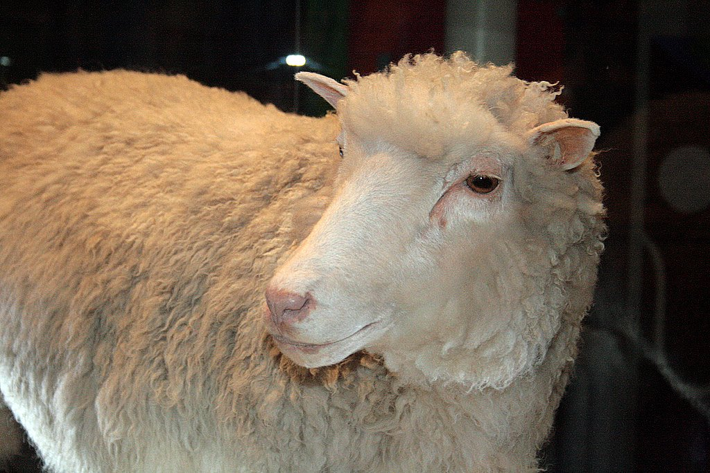

Final Project
For my Final Project I decided to make 2 more image filters, but this time make them a little more complex than the first filter. The first filter Essentially creates a black and white stencil of the original image and then pastes it over a Colourful Gradient. The second Filter First Converts The Image into Grayscale and then Overlays A Transparent Gradient on top.

def stencil_filter(original_image):
#converts the image to a numpy ndarray
original_image = original_image.convert("RGBA")
img = np.array(original_image)
#gets the width and height of the original image
width, height = original_image.size
for row in range(0, height):
for column in range(0, width):
if sum(img[row][column]) < 600:
img[row][column] = (0, 0, 0, 255)
if sum(img[row][column]) > 600:
img[row][column] = (255,255,255, 0)
#convert it back to an image from an array
result = PIL.Image.fromarray(np.uint8(img))
#opens the gradient image
gradient_img = PIL.Image.open('gradient.png')
#resizes gradient image to the same size as original image
gradient_resize = gradient_img.resize((width, height))
gradient_resize.paste(result, (0, 0), mask=result)
return gradient_resize
def rainbow_filter(original_image):
#converts the image to a numpy ndarray
original_image = original_image.convert("RGB")
img = np.array(original_image)
#sets the values of the width and height variables
width, height = original_image.size
#for every pixel it changes the colour to the average of the rgb values
for row in range(0, height):
for column in range(0, width):
#gets RGB values
r,g,b = img[row][column]
#gets the average of all 3 values added together
gray = ((0.21*r) + (0.72*g) + (0.07*b))
#sets RGB values to the Gray average
r=gray
g=gray
b=gray
img[row][column] = [r,g,b]
#convert it back to an image from an array
result = PIL.Image.fromarray(np.uint8(img))
#converts the result of the grayscale image to RGBA
result = result.convert("RGBA")
#opens the gradient image
gradient_img = PIL.Image.open('gradient.png')
#resizes gradient image to the same size as original image
gradient_resize = gradient_img.resize((width, height))
#pastes gradient onto original image
result.paste(gradient_resize, (0, 0), mask=gradient_resize)
return result